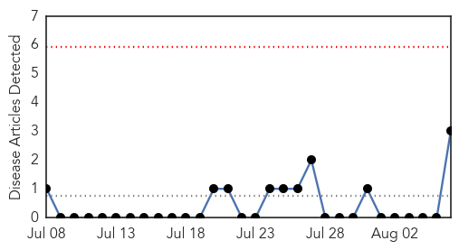
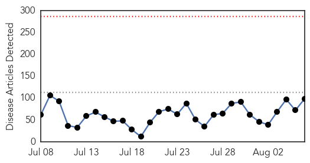

Bubonic Plague
30-Day Web Trend
0 alerts, 0 warnings

30-Day Twitter Trend
0 alerts, 0 warnings

Article Locations

Article Confidences

Top Articles:
Top Tweets:
-
No tweets found for Aug 06, 2015
Unknown
30-Day Web Trend
0 alerts, 0 warnings

30-Day Twitter Trend
0 alerts, 0 warnings
Article Locations

Article Confidences

Top Articles:
- 0.997
- 97 Sick, 8 dead in NYC Legionnaires' outbreak: Officials
- 0.995
- 97 Sick, 8 Dead in NYC Legionnaires' Outbreak: Officials
- 0.995
- 97 Sick, 8 Dead in NYC Legionnaires' Outbreak: Officials
- 0.995
- 97 Sick, 8 Dead in NYC Legionnaires' Outbreak: Officials
- 0.994
- Legionnaire's Disease Most Deadly for Frail, Elderly, Experts Say
- 0.985
- 8 dead, nearly 100 sick in New York Legionnaires’ outbreak: What you need to know
- 0.979
- Legionnaire's disease outbreak: 7 dead - Fox 5 NY
- 0.969
- Now 10 Dead, 100 Sickened Amid Unprecedented Legionnaires' Disease Outbreak in New York City: Officials
- 0.968
- 8 dead in NYC Legionnaires' outbreak
- 0.964
- 10th person dies in New York Legionnaires' disease outbreak
- 0.956
- Jordan: Shigella outbreak sickens 80, hummus believed to be the source
- 0.949
- 97 sick, 8 dead from NYC Legionnaires’ disease
- 0.949
- Public Health Officials Investigate Human Plague Found in Child Camping in Yosemite National Park
- 0.943
- Public Health Officials Investigate Human Plague Found in Child Camping in Yosemite National Park
- 0.939
- Gold Coast schools gutted by flu and chickenpox outbreaks
- 0.938
- California health officials investigating human plague case in Yosemite
- 0.938
- California health officials investigating human plague case in Yosemite
- 0.934
- What you need to know about the Legionnaires' disease outbreak
- 0.930
- NYC Mayor Passes Law to Alleviate Legionnaires' Disease Outbreak
- 0.923
- Vital Signs: Estimated Effects of a Coordinated Approach for Action to Reduce Antibiotic-Resistant Infections in Health Care Facilities — United States
- 0.917
- Chicago Tribune
- 0.917
- Chicago Tribune
- 0.917
- Chicago Tribune
- 0.917
- Chicago Tribune
- 0.917
- Chicago Tribune
- 0.917
- Chicago Tribune
- 0.917
- Chicago Tribune
- 0.917
- Chicago Tribune
- 0.911
- L.A. County Child Diagnosed With Plague After Visit to Yosemite National Park
- 0.905
- California health officials investigate human plague case
- 0.899
- Legionnaires’ disease outbreak in the Bronx exposes safety issues
- 0.895
- Outbreak of Legionnaires’ disease causes concern across country
- 0.891
- Hospitals must launch coordinated attack against superbugs, CDC says
- 0.889
- 8th person with Legionnaires’ disease dies in outbreak, 97 sickened
- 0.888
- Health officials investigating rare case of human plague in California
- 0.888
- 8th person dies in New York Legionnaires' disease outbreak
- 0.876
- Central Valley Business Times
- 0.875
- New plague death confirmed in Colorado
- 0.875
- Boulder County reports 1st human plague case in two decades, 4th case in Colorado this year
- 0.864
- Plague comes to L.A. County; child maybe OK after Yosemite trip
- 0.862
- California Department of Public Health Investigates Human Plague Case
- 0.862
- S. Korea issues nationwide encephalitis warning
- 0.859
- Child Contracts Human Plague After Visiting Yosemite And National Forest
- 0.849
- Legionnaires' death toll rises to 10
- 0.831
- What you need to know about Legionnaires' disease
- 0.826
- Tuberculosis cases declining in Azerbaijan
- 0.821
- Be vigilant about illness from tainted commercial shellfish, B.C. doctors told
- 0.804
- Experts warn antibiotic misuse could lead ‘superbug’ to kill almost 40,000 in five years
- 0.794
- How Crappy Infrastructure Led To NYC's Deadly Legionnaire’s Outbreak
- 0.792
- How Crappy Infrastructure Led To NYC's Deadly Legionnaire's Outbreak
Showing top 50 articles...
Top Tweets:
- 0.523
- CDC flu vaccine recommendations for the 2015-16 flu season are now available: http://t.co/4Gm8rMlMAN